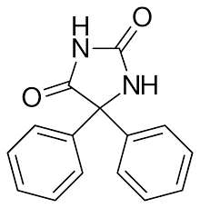
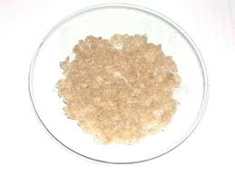

E siamo arrivati così al terzo e ultimo passaggio: partendo dalla benzaldeide si arriva al benzoino, dal benzoino al benzile e oggi dal benzile alla fenitoina, con l'unico scopo (chiaro e fondamentale in tutto il mio blog) di giocare con le molecole.
O comunque di giocare quasi sempre con qualcosa di pratico, tangibile, toccabile, odorabile... la sola teoria non mi soddisfa se non la accompagno poi in qualcosa da "fare" (e questo non solo per la chimica).
Cosa sia e a cosa serva la fenitoina lo lascio alla curiosità degli eventuali lettori, che potranno reperire tutte le informazioni relative con estrema facilità; queste mie sintesi non servono a produrre dei composti chimici per uno scopo preciso ma solo a verificarne la possibilità di farlo, quando possibile, anche con mezzi semplici.
Naturalmente la soddisfazione è decisamente molto maggiore quando il prodotto coincide con una sostanza "importante" per qualche motivo pratico o storico, come in questo caso.
La sintesi delle 5,5-difenilidantoina è interessante anche perchè nella reazione si verifica la chiusura di un anello, producendo un eterociclo a cinque termini con due carbonili e due atomi di azoto (idantoina).

Materiale occorrente:
-benzile C6H5-CO-CO-C6H5
-urea NH2-CO-NH2
-potassio idrossido KOH
-etanolo
-acido cloridrico
-vetreria opportuna
La sintesi, nonostante la complessa reazione, è semplicissima; ecco come ho proceduto.
In un palloncino da 100 ml porre 2 g di benzile e 1 g di urea finemente macinata e aggiungere 50 ml di etanolo, agitando fino a soluzione completa.
Aggiungere ora 2 g di KOH mescolando ulteriormente; la soluzione si colora di rosso.
Mi mancano purtroppo stavolta le immagini della sintesi.
Porre con refrigerante a ricadere a riflusso per circa cinque ore. Alla fine raffreddare in ghiaccio e filtrare la piccola quantità di precipitato giallo che si è formato, parte del quale aderisce alle pareti del pallone.
[Secondo la mia fonte dovrebbe essere difenilacetilene diureide...(?). Sarebbe molto interessante ottenere qualche notizia in merito anche a queste reazioni secondarie, ma sarà ben difficile reperirle]
Aggiungere al filtrato circa 100 ml di acqua e acidificare la soluzione con HCl fino a pH leggermente acido (4-5).
Acidificando precipiterà la fenitoina grezza, in fogliette leggere di colore nocciola chiaro. Raffreddare in ghiaccio e filtrare spremendo bene, indi lavare con acqua fredda.
Purificare il grezzo da etanolo bollente e acqua (circa 30/20 ml) lasciando ricristallizare lentamente.
L'operazione schiarisce notevolmente il prodotto, che si presenta alla fine come sottili aghetti voluminosi e leggeri, inodori e di colore beige. Resa 1,2 g, circa il 50%.
Ho verificato che sarebbe possibile decolorare perfettamente la fenitoina per mezzo di una piccola quantità di carbone attivo; non ho effettuato l'operazione avendone in gioco solo poco più di un grammo ma sicuramente ne varrebbe la pena avendone di più e volendo ottenere un prodotto perfettamente bianco.
Per avere un'idea della purezza ho controllato il suo (alto) p.f., ottenendo 285° contro i 295° teorici; con la decolorazione ed una ulteriore cristallizzazione sarebbe certo possibile avvicinarsi ancora di più al teorico.
Infine ecco la 5,5-difenilidantoina (fenitoina) che è il prodotto ottenuto.
